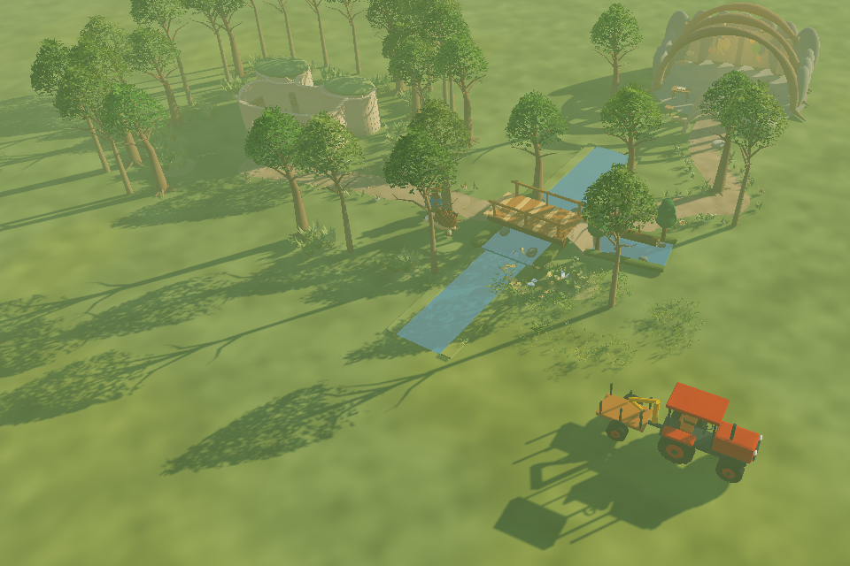
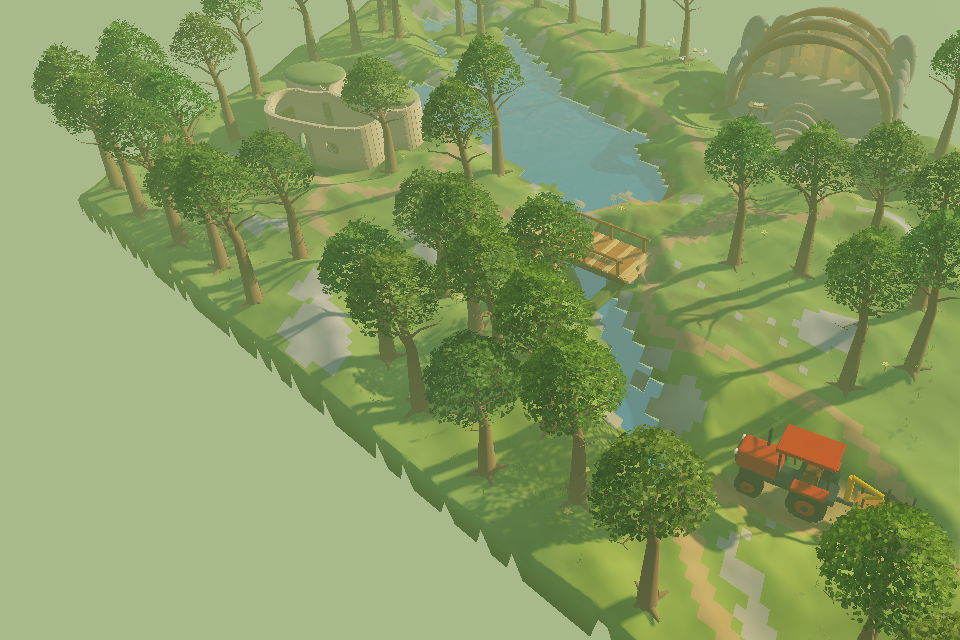
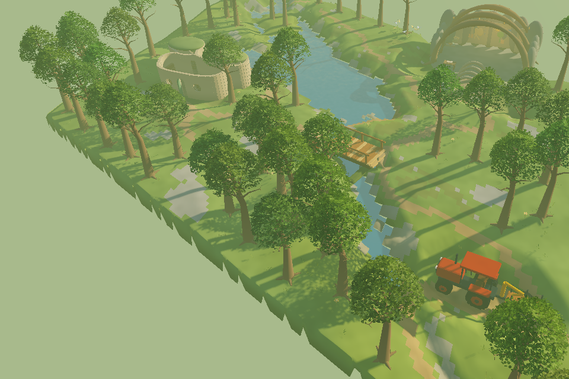

Terrain displacement, ground classes, density fields, route connectivity and object placement now consume ChatGPT-generated raster inputs. No second manual grove or route is rendered. Existing architecture/character mesh templates remain migration debt.
Not yet 1:1 or photoreal. The common image-plane overlay shows where the Elder, home, garden and shore appearance still differ. It is not a surveyed orthophoto. Heights are artist units, with bounded slopes and physical floor/route constraints. No hardware performance claim.
Open top-down world · Open forest · Generated inputs · Coordinate/acceptance contract · GPU evidence


Only the source generated heightmap changes; camera, class map, backend and lighting stay fixed. Actual GPU pixels must change.
